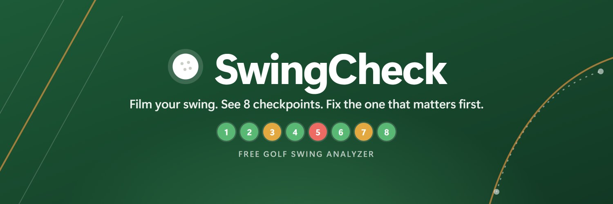

Brand guidelines · one page

Name
SwingCheck: one word, capital S and capital C.
Not Swing Check, swing-check, Swingcheck or SC.
All caps (SWINGCHECK) only in small spaced-out labels, like the PDF header.
In code, files and commands it stays lowercase: swingcheck.
Logo
Use
- The mark is a golf ball on a Fairway green disc. On dark green, use the white ball with a soft white ring (
logo-on-dark.svg). - Keep clear space around it of at least half its width; don't go smaller than 20 px.
- Don't recolor, stretch, outline, rotate or add shadows to it.
Color
Fairway is the brand color: buttons, links, the logo. Deep green is for big dark backgrounds like the cover. Bright green replaces Fairway in dark mode. Plane orange is only for swing lines.
Status colors
These mean results only. Never use red or amber for decoration.
Type
The system font: Segoe UI on Windows, SF Pro on Apple, Roboto on Android. No web fonts.
Voice
A friendly coach who gets to the point. Plain words first, golf terms second.
- One thing first. Lead with the biggest issue and how to fix it.
- Sentence case everywhere: "Club on plane", not "Club On Plane".
- Centimeters only for distances. Each check shows a Good range and a Fix range.
- Free, no hype. Ask for support gently, never block anything behind it.
Example
Do "Slightly standing up (11° more upright). Keep your hips back through impact."
Don't "Suboptimal pelvic kinematics detected!"